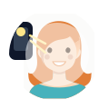
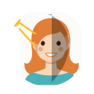
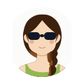

1 Cómo debe verse la foto
El objetivo: la cara de frente, centrada, bien iluminada, con el uniforme de tu tienda y fondo claro. Así:
De frente · hombros visibles · uniforme · fondo claro · buena luz · expresión natural
Gorra · lentes de sol · lo que tapa la cara no va
2 La distancia correcta
Ni muy cerca (deforma la cara, agranda la nariz) ni muy lejos (la cabeza sale muy chica). Lo ideal: 1 a 1,5 metros, más o menos un brazo y medio de distancia.

El celular a la altura de los ojos, derecho, sin inclinar. Que se vean la cabeza y los hombros con un poco de espacio arriba.
Pegando el celular la cara se deforma
Cabeza y hombros · proporción natural
3 La luz
La luz es lo más importante. La regla de oro: la luz de frente, la cara mirando hacia la ventana o la luz.

×
4 El fondo
Fondo claro, liso y sin cosas detrás (nada de estanterías, carteles, cables ni personas). Una pared blanca o clara es lo mejor.
Pared clara, lisa, separada de la persona
Estantería, carteles y cosas detrás
5 Cómo se pone el colaborador
Con el uniforme de su tienda o empresa (chaleco, chemise, franela con la marca… el que corresponda), derecho, mirando a la cámara. Sin nada que tape la cara.
- ✓Con el uniforme de su tienda o empresa (el que use cada marca).
- ✓De frente y derecho, sin inclinar ni girar la cabeza. Hombros parejos.
- ✓Expresión neutral: mirando a la cámara, ojos abiertos (una sonrisa leve está bien, sin exagerar).
- ✓Cara despejada: el cabello no debe tapar los ojos ni la cara. Si es largo, mejor recogido.
Cosas que NO deben salir en la foto:

×6 Paso a paso, en la tienda
Resumen para hacerlo rápido y que salga bien:
- Busca un buen lugar: una pared clara y lisa, cerca de una ventana con luz de día. Que el colaborador quede a un paso (~1 m) de la pared.
- Que mire hacia la luz: la cara hacia la ventana, no de espaldas a ella. Apaga el flash.
- Uniforme y postura: con el uniforme, derecho, de frente, sin gorra ni lentes, el pelo fuera de la cara.
- Cámara de atrás, a la altura de los ojos: párate a 1–1,5 m (un brazo y medio). Que se vean cabeza y hombros, con espacio arriba.
- Expresión neutral: mirando a la cámara, ojos abiertos, boca cerrada. Toma 2 o 3 fotos y elige la mejor.
- Revisa antes de subir: cara nítida, sin sombras, fondo claro sin cosas detrás. Súbela en el portal desde el botón “Elegir foto” y usa el zoom para centrar la cara en el círculo.